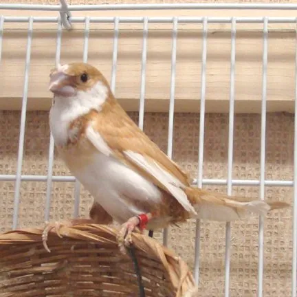
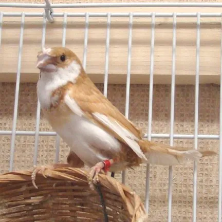

설치류
설치류 어류
어류 조류
조류 파충류
파충류 포유류
포유류첫 3~5일 정도는 조용하고 어두운 환경을 만들어 안정을 취하게 해 주는 것이 좋다
십자매
성질이 온순하고 새장에 여러마리를 넣어도 자매처럼 친하게 지낸다 하여 십자매라는 이름이 생김 소음이나 입질, 털 문제도 적은 편
좁은 새장도 상관없으나 기본적으로 잘 날아다니는 소형 조류이므로 새장은 넓을수록 좋다
렛+알곡모이가 가장 좋으나 형편상 곤란할 경우 곡류에 계란껍데기&야채라도 챙겨줘야 한다
약 5년
십자매
첫 3~5일 정도는 조용하고 어두운 환경을 만들어 안정을 취하게 해 주는 것이 좋다
성질이 온순하고 새장에 여러마리를 넣어도 자매처럼 친하게 지낸다 하여 십자매라는 이름이 생김 소음이나 입질, 털 문제도 적은 편
좁은 새장도 상관없으나 기본적으로 잘 날아다니는 소형 조류이므로 새장은 넓을수록 좋다
렛+알곡모이가 가장 좋으나 형편상 곤란할 경우 곡류에 계란껍데기&야채라도 챙겨줘야 한다
약 5년